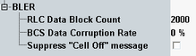

Measurement Settings
The parameters in the "BLER" section configure the scope of the measurement.
See also: "Statistical Settings"

Statistical settings
Defines the number of RLC data blocks to be evaluated per measurement cycle (statistics cycle, single-shot measurement). The number of blocks sent can be larger than the specified value because blocks can be lost on the way to the mobile.
Remote command:This setting is covered in the configuration tree, see "BCS Data Corruption Rate".
If you press ON | OFF while the "GSM Signaling" softkey is selected and the cell signal is on, a warning can be displayed. It asks you whether you really want to switch off the cell signal.
The checkbox enables/disables the warning.
No remote control is provided for this feature.